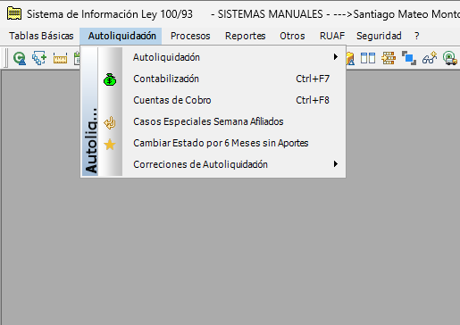

Es el menú del aplicativo de Ley 100 desde el cual se realiza la aplicación de pagos y aportes asociados a la seguridad social. Se puede entender como un punto de entrada al proceso de registro de aportes, desde donde se ejecutan las acciones necesarias para que un pago quede aplicado en el sistema.
De este menú se despliegan los siguientes sub-menus.

Temas Relacionados